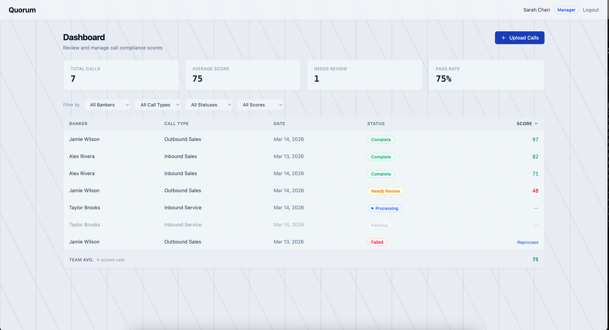
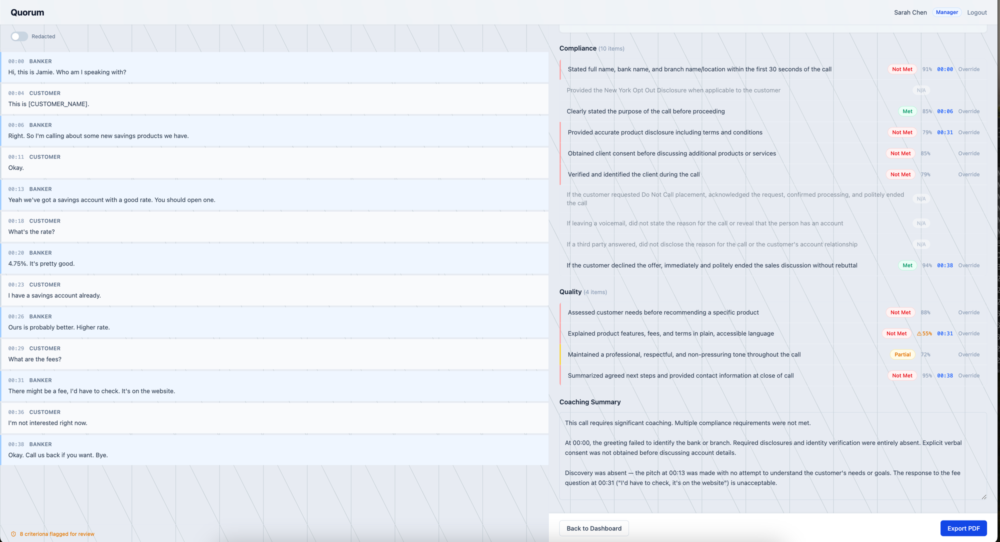
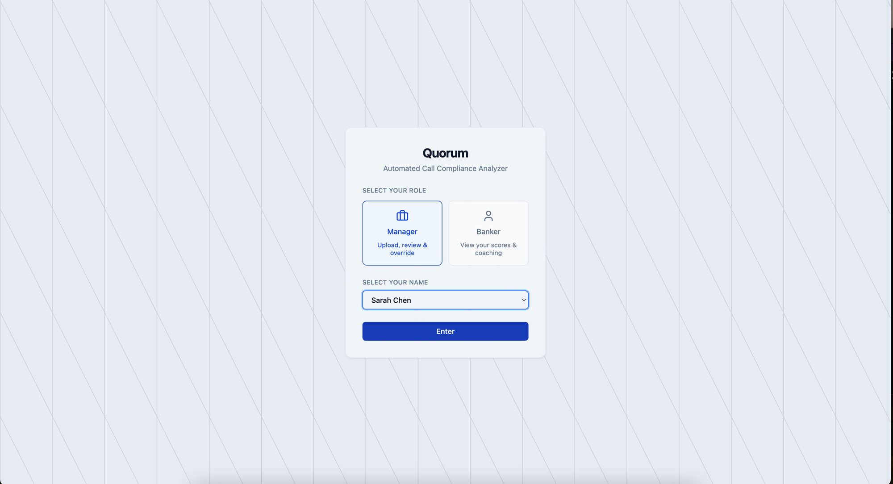
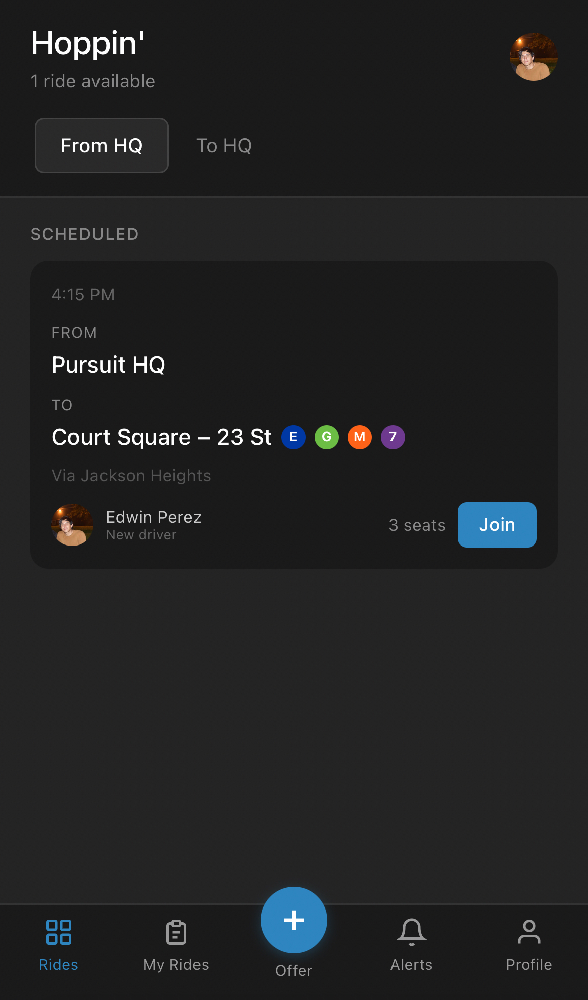
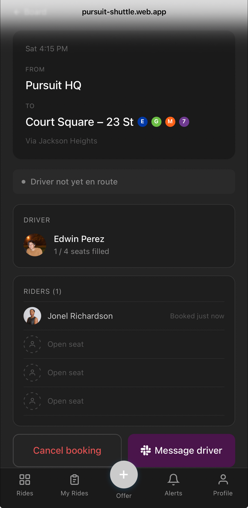
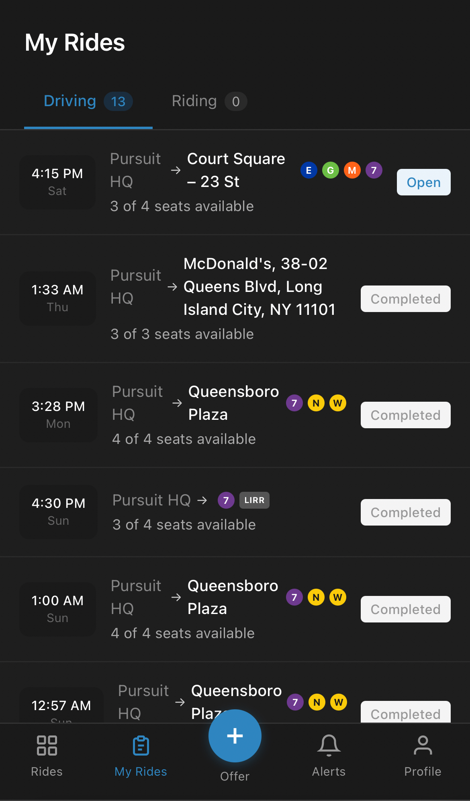

Full-stack developer in the Pursuit AI Fellowship. Before that: financial services at Citi and Metropolitan Commercial Bank, and a licensed NYC contracting business. Three different environments. Same habit.



AI-powered call compliance and quality analyzer built for financial institutions. Replaces a manual 7-hour review process with a fully automated pipeline — transcription, PII redaction, compliance scoring, and coaching feedback — in under 10 minutes. Built with a privacy-first architecture: by default, nothing leaves the institution's infrastructure.



A fully functional ride-sharing platform built for Pursuit fellows navigating Long Island City at night. Fellows sign in with their existing Slack credentials — no new account, profile ready immediately — set their transit preferences once, and receive Slack DMs when rides are posted, seats are booked, or anything changes. The G train runs on shuttle buses most nights due to ongoing service work, forcing students to leave class early to catch their last ride home. Hoppin' eliminates that tradeoff. Also surfaces restaurants within 10 minutes by car — during the hour-long lunch and dinner breaks where most fellows default to delivery, Hoppin' makes it easy to go out instead. Cheaper than ordering in, and the friendships built over a shared meal are part of what makes the community.
Digital measurement, reporting, and verification platform for utility-scale solar. Compresses weeks of manual consultant work — typically $15K–$50K per report — into a self-serve, sub-60-second workflow that generates registry-ready carbon credit documentation. Upgraded from a flat-rate calculator to an hourly marginal displacement engine using live EPA eGRID and EIA grid mix data.
Developer-first messaging platform built on a Pull Inbox model — eliminating the need for webhook infrastructure entirely. Developers fetch messages on their own schedule via a simple REST API. Includes a real-time billing intelligence dashboard with spend-by-channel breakdowns, usage trends, budget thresholds, and a hard-stop guard at 100% of limit.
Multi-caregiver pet health coordination platform with AI-generated vet reports, daily briefings, and incident guidance. GPT-4o translating behavioral observations into plain-English triage — built for households, not clinics.
NYC's official Medicaid pharmacy tool ships with a 5-page PDF just to operate it. MedFinder pulls directly from the Medicaid-covered pharmacy directory and puts the results on a clean map — with subway line proximity built in so users know exactly how to get there. No filters. No manual. Just find your pharmacy and go.
Peer discovery platform built for the Pursuit cohort. Fellows list their strengths, interests, and what they want to learn — so classmates can find exactly who to go to for help. Paired with a cohort-sourced resource library where links are submitted and surfaced based on peer votes, keeping recommendations tied to the actual curriculum rather than a generic Google search.
Grocery marketplace clone with a split-manifest checkout — showing customers exactly what was fulfilled and what was refunded before they were charged. Framing honesty as a feature, not a failure state.
At Metropolitan Commercial Bank, I worked on an Excel dashboard that pulled client requests from our team's Outlook inbox and gave four people a single shared view of the queue. Nobody asked for it. It just needed to exist.
At my contracting company, Assembly for Poets, I automated every client-facing document — proposals, co-op board submissions, management company correspondence — using AI-generated templates. What used to take hours became a few minutes.
At Pursuit, I looked at fellows without cars walking 15–20 minutes to a G train with known reliability issues, and built Hoppin' — a ride coordination platform so that commute doesn't become the reason someone misses class.
Pursuit AI Fellowship — AI-integrated full-stack development, civic data tools, and software that creates operational advantages for small operators and underserved communities.
React, TypeScript, Node.js, Python, FastAPI, Express, PostgreSQL, Firebase, OpenAI API, Tailwind CSS, Git
Licensed Home Improvement Contractor (NYC) — Assembly for Poets
Citi · Metropolitan Commercial Bank
FDNY Candidate